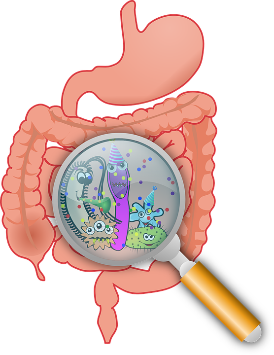

The microbiome consists of microorganisms of thousands of different species (bacteria, fungi, parasites and viruses). All these different species will coexist in a healthy body without any problems, but if there is an imbalance in your microbiome, this can lead to a disease. The use of a microbiome investigation can especially be useful for patients who do not seek any benefit from the current medication treatments, since this may lead to a reduction of their symptoms or even remission. As a treatment option there is the use of pro- and prebiotics and fecal microbiota transplantation. However, investigation in a patient's microbiome can also be useful since Crohn's disease can be caused by environmental factors, genetic factors, immune response and the microbiome. Therefore examining the microbiome may lead to new insights about for example disease development. It can also be used to make a distinction between CD and UC and thereby be a helpful tool for the diagnosis of CD. In addition, the gut microbiome can also be used to predict the disease outcome, where this can be used for a personalized treatment.

The information that the microbiome can provide can lead to new treatment possibilities. Even though there is still much to be researched, this promising field can and is already giving a solution to patients who want or need treatments that differ from the regular use of medication.
Someone who has Crohn's disease may have additional complaints, such as fatigue and skin complaints. Can balancing your microbiome reduce or remedy these complaints?
No disease can be reduced to, for example, one organ, everything is interrelated. For example, an inflammation in the gut can cause other complaints, just like someone with a broken leg can also have additional complaints, such as feelings of depression. So looking at the microbiome can certainly have a positive effect on the additional complaints that a Crohn's patient experiences.
What is the percentage of patients who have recovered or have a clear reduction of complaints after treatment at the microbiome center?
About two-thirds of patients are satisfied or very satisfied. This includes all patients, not only IBD patients.
When is the best time to do a microbiome study: before the medication trajectory, during the treatment or when someone enters remission?
If a patient is in an acute phase (flare), then no, because you have to have something that works acutely.
Use in the remission phase to see if you can make remission last longer. It is also per patient, because if a patient remains in remission you do not immediately have to think of a microbiome examination, but if a patient remains unstable in remission, a microbiome examination could offer a solution.
Is it also possible to conduct a microbiome study abroad? If so, which countries and what are these organizations called?
Abroad is not something comparable to the microbiome center. We are in the process of expanding to other countries in Europe, but we do not know any other example worldwide that does this. This concerns personalized probiotics, because probiotics themselves are of course also used abroad.